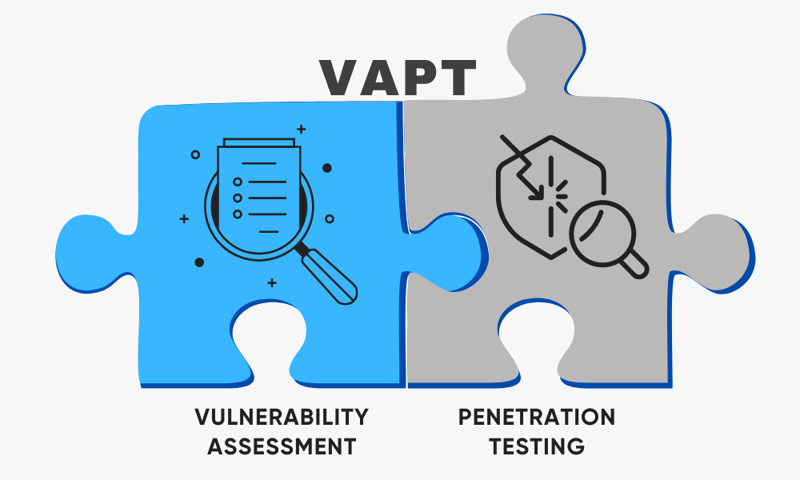
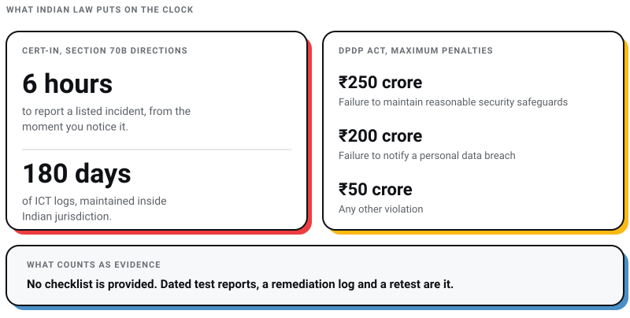
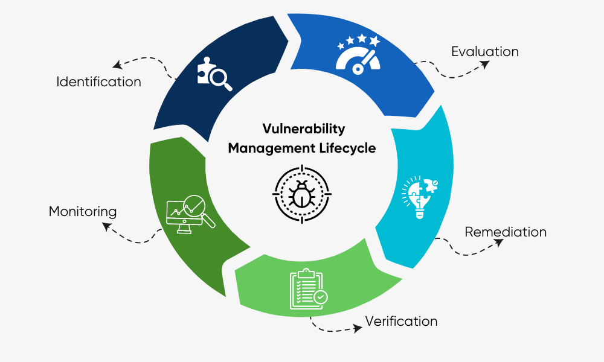
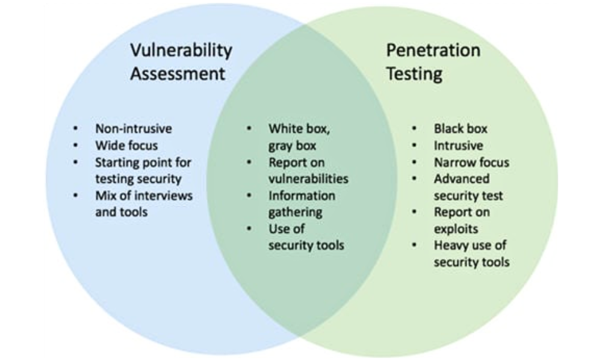
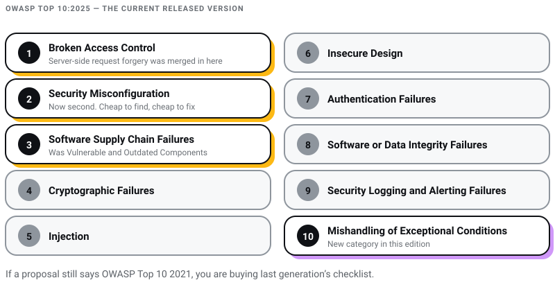
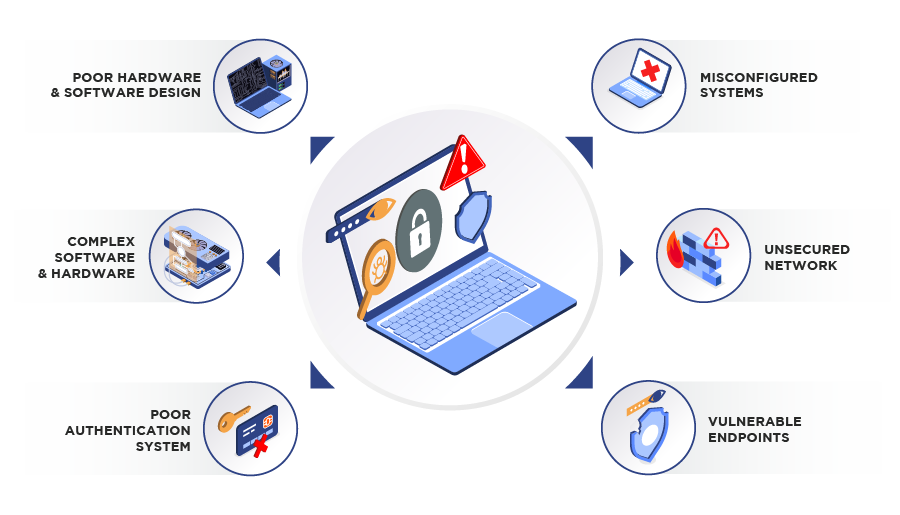
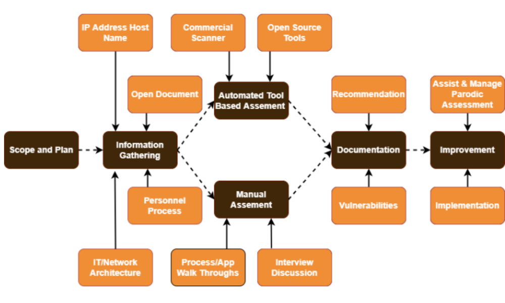

{kind=link}
 WEB DEVELOPMENT
WEB DEVELOPMENT
AI Website Builders vs Custom Development: Where the Shiny Tools Actually Break
AI website builders are fast, but are they right for your business? Discover where they excel, where they fail, and when custom development is the…
Most VAPT guides are glossaries. They define vulnerability assessment, define penetration testing, list some tools, and tell you attackers are getting craftier. All true. None of it tells an Indian business owner the thing that actually decides what they do on Monday morning, which is that if you notice a breach in India, you have six hours to tell the government about it.
I run Pixel Street, a design and branding studio in Salt Lake, Kolkata. We design and build for brands like Coca-Cola, ITC and Marico. I am not a penetration tester and this post will not turn you into one. What I can do is tell you which standards actually apply in 2026, which of the tool names still in circulation are already wrong, and what a business here is legally on the hook for, with the primary documents linked so you can check me.
My position: for most Indian businesses the deadline that changes behaviour is not the attacker. It is the regulator. Security testing has stopped being a maturity badge and become a paperwork obligation with a rupee figure attached to failure.

VAPT is two different jobs sold under one acronym. A vulnerability assessment is broad, mostly automated, and answers "what is weak here". A penetration test is narrow, human-led, and answers "can someone actually get in, and how far". You need both, on different schedules, and you should never accept one when you paid for the other.
Three dates set the clock for an Indian business:
And one number for the size of the loss you are testing against. IBM's Cost of a Data Breach Report 2026 puts the global average at USD 4.99 million, a 12% rise and a record, with the India average at USD 2.79 million (IBM, 29 July 2026). Read the methodology before you quote that at anyone; I do so below, because the headline is more careful than it looks.
This is the section that should shape your scope, your schedule and your budget. Work through it before you talk to a vendor, not after.
On 28 April 2022 CERT-In issued directions under sub-section (6) of section 70B of the Information Technology Act, 2000. They became effective 60 days after issue, and CERT-In published an extension of timelines on 27 June 2022 covering MSMEs and certain validation requirements for data centres, VPS, cloud and VPN providers (CERT-In directions under section 70B). As of July 2026 that page still lists the 2022 directions, the FAQ and the extension, with nothing superseding them.
Two clauses drive the work:
That log clause is a hosting decision as much as a security one. If your stack ships logs to a region outside India by default, you have a problem that no penetration test will find for you, and it is worth checking against your provider before you sign anything. Our guide to hosting services in India is a reasonable starting point for that conversation.
Annexure I is worth reading in full, because it is broader than most people assume. It lists twenty categories, including targeted scanning or probing of critical networks and systems, unauthorised access of IT systems or data, website defacement, attacks on servers, identity theft and phishing, denial of service, data breach, data leak, attacks on IoT devices, attacks affecting digital payment systems, fake mobile apps, and attacks affecting systems related to artificial intelligence and machine learning.
Note the first item. Targeted scanning or probing of critical networks is itself a reportable incident. That is precisely what a vulnerability assessment looks like from the inside of a monitoring stack, which is why written authorisation is not a formality and why your security team needs to know the test window in advance.
If you need an auditor with standing, CERT-In maintains a public list of empanelled information security auditing organisations, currently running past 230 firms with addresses and named contacts. For regulated work in India, empanelment is usually the first filter applied to a shortlist.
Parliament enacted the Digital Personal Data Protection Act on 11 August 2023. The operative machinery arrived much later: the Government notified the DPDP Rules, 2025 on 14 November 2025, after a consultation that drew 6,915 inputs (Press Information Bureau, 17 November 2025).
Three things from that document matter for security testing:
"Reasonable security safeguards" is the phrase to sit with. The Act does not hand you a checklist, which means the evidence you produce after an incident is the argument. Dated test reports, a remediation log and a retest are the cheapest form of that evidence I know of. Significant Data Fiduciaries carry more: independent audits and data protection impact assessments.

If you take card payments, the version history is short and the deadline has already passed. PCI DSS v3.2.1 was retired on 31 March 2024. Of the 64 new requirements introduced in v4.0, 51 were future-dated and became mandatory on 31 March 2025 (PCI Security Standards Council, 20 August 2024). PCI DSS v4.0 itself was retired on 31 December 2024, leaving v4.0.1 as the only active version (PCI SSC, 11 June 2024).
The Council states directly that external vulnerability scans under Requirement 11.3.2 must be run at least once every three months by a PCI SSC Approved Scanning Vendor (PCI SSC, 10 July 2024). The standard itself sits behind an agreement, so for the neighbouring cadences I am relying on a QSA's published summary rather than the PDF: internal scans under 11.3.1 at least once every three months, and internal and external penetration testing under 11.4.2 and 11.4.3 at least once every 12 months and after significant changes (CompliancePoint, authorised QSA, 8 April 2024). Confirm those against your own QSA before you build a calendar on them.
IAF MD 26:2023 set a three-year transition to ISO/IEC 27001:2022, requiring certification bodies to complete transitions of certified clients within 36 months of the last day of the publication month, which the document states as 31 October 2025 (International Accreditation Forum, 15 February 2023).
The practical consequence in 2026 is a vendor-diligence one. If a supplier sends you a certificate that says ISO/IEC 27001:2013, the transition window for it closed. Ask for the 2022 certificate.
A vulnerability assessment works through your systems and networks to identify, evaluate and report security weaknesses. It leans on automation, it covers a lot of ground, and it produces a list. That list is the input to everything else.

Vulnerability management is continuous, and the loop only closes on step four:
The step that gets skipped is verification, and skipping it is how a company ends up with three annual reports listing the same finding. If your engagement does not include a retest, you have bought a list, not an improvement.
A penetration test is an authorised, simulated attack. It is scoped tighter than an assessment, it is led by a person rather than a scanner, and its output is a narrative of what someone was able to do.
Black-box tests feel more realistic and usually buy you less. A determined attacker has unlimited time; your tester has a fortnight. Giving them architecture and credentials spends that fortnight on depth instead of on reconnaissance you could have handed over on day one.
Step five is the line between the two disciplines. If nothing was attempted, nothing was penetration tested.

Source: softwaretestinghelp.com
| Vulnerability assessment | Penetration test | |
|---|---|---|
| Question answered | What is weak here? | Can it be exploited, and how far does it go? |
| Breadth | Wide, across the environment | Narrow, against agreed targets |
| Method | Mostly automated scanning | Automated tooling plus manual exploitation |
| Output | A ranked list of findings | A narrative of attack paths, with evidence |
| Typical PCI DSS cadence | Every three months (11.3.1, 11.3.2) | Every 12 months and after significant change (11.4.2, 11.4.3) |
| What a bad vendor delivers | A scanner export with a cover page | The same scanner export, priced as a penetration test |
That last row is the practical reason to care about the distinction. Both deliverables look like a PDF full of CVEs. Only one of them cost a human two weeks.
OWASP's project page states that "the most current released version is the OWASP Top Ten 2025" (OWASP Foundation). The 2021 edition stood for four years, so a great deal of published guidance was written against a list that has now moved.
The 2025 order is Broken Access Control, Security Misconfiguration, Software Supply Chain Failures, Cryptographic Failures, Injection, Insecure Design, Authentication Failures, Software or Data Integrity Failures, Security Logging and Alerting Failures, and Mishandling of Exceptional Conditions (OWASP Top 10:2025).

Three shifts are worth your attention when you scope a test:
Ask any vendor which edition their methodology maps to. If the proposal says OWASP Top 10 2021, or just "OWASP", you are buying last generation's checklist.
Tool names rot faster than technique. Here is the current list, with what each is and what it actually costs to start.
| Tool | Who owns it now | What to know in 2026 |
|---|---|---|
| ZAP | ZAP Core Team, sponsored by Checkmarx | Free, Apache 2.0. It left OWASP in 2023, so "OWASP ZAP" now dates a document rather than naming a product. |
| Nessus | Tenable | Still the default commercial scanner. The free Essentials tier was cut from 16 targets to 5 with export disabled in Nessus 10.11.0 (20 November 2025). |
| OpenVAS | Greenbone AG | Free community edition, plus paid appliances. Greenbone rebranded its whole portfolio around the OPENVAS name in July 2025, so the community-edition naming you may remember is the part that is stale. |
| Nexpose | Rapid7 | Release notes stopped on 23 May 2025 and moved to the Command Platform. InsightVM is where Rapid7 points new work. |
| Burp Suite | PortSwigger | Community Edition is still free but is a manual toolkit with no automated scanner. Enterprise Edition was renamed Burp Suite DAST on 15 April 2025. |
| Metasploit | Rapid7 | Framework is still free and open source under a BSD-style licence, actively developed, currently on the 6.5 line. |
| Nmap | The Nmap Project | Free and open source, but under the Nmap Public Source License rather than the GPL. Worth knowing if you redistribute it. |
| Kali Linux | OffSec | Free, quarterly releases, currently 2026.2. |
| Acunetix | Invicti Security | Still sold under the Acunetix name, alongside Invicti (formerly Netsparker). Commercial only. |
| Fortify | OpenText | Micro Focus was acquired by OpenText on 31 January 2023. The products are being renamed to OpenText Static and Dynamic Application Security Testing. |
| AppScan Source | HCL Software | Not IBM. IBM divested AppScan to HCL effective 1 July 2019. |
| Checkmarx, Veracode | Checkmarx Ltd, Veracode | Both active, both commercial, both now positioned as platforms rather than single scanners. |
The tool list is the least important part of a proposal. Anyone can run Nessus. What you are buying is the judgement applied to its output, which is why I would rather see a named methodology than a logo grid.
VAPT gets sliced two ways, and both slices are useful when you write scope.
And by vantage point:

Source: yotta.com
The honest case is narrower than the marketing case, so here is the honest one.
IBM's 2026 report associates offensive security testing, defined in the report as red teaming, penetration testing or vulnerability testing, with a breach cost USD 211,339 below the global average. IBM is explicit that it examined 30 contributing factors and measured each in isolation against the mean, so treat that as a correlation in a benchmark, not a return on investment you can bank (IBM Cost of a Data Breach Report 2026).
The methodology deserves a paragraph, because this report is quoted more often than it is read. It is conducted by the Ponemon Institute and sponsored by IBM. The 2026 edition studied 602 organisations breached between March 2025 and February 2026 across 17 industries and 16 countries, interviewing 3,558 people with firsthand knowledge. Critically, it excludes very small and very large breaches: the incidents studied ranged from 2,590 to 115,380 compromised records. So it is a self-reported benchmark of mid-sized breaches, not a census, and not a study of the mega-breaches that make the news. The India average in that sample is USD 2.79 million, up from USD 2.51 million.
Beyond the money, a testing programme does four things that hold up in a room with lawyers in it:

Source: nuox.io
A report that earns its fee contains all six of these. If a sample report is missing three, keep looking.
Testing without permission is an offence, not a favour. Five rules to keep to:
This is my own list, formed from watching how these engagements are sold rather than from running them.
One more thing, aimed at the smaller businesses we mostly talk to. The recurring failure I see is not the absence of a test. It is a site built, launched, and then never patched, with a certificate that quietly expires and a CMS three major versions behind. If that is you, a penetration test is the wrong first purchase. Fix patching and your SSL setup first, then test. Testing a system nobody maintains only tells you what you already suspect.
If PCI DSS applies, the cadence is set for you: scans every three months, penetration tests at least every 12 months and after significant change. If it does not, annual penetration testing with quarterly scanning is a defensible baseline, and "after every significant change" matters more than the calendar. A major release deserves a test regardless of when the last one ran.
For some obligations, yes. For a claim that you took reasonable security safeguards, it is weak on its own, because a scan reports theoretical exposure while a penetration test demonstrates what an attacker could actually reach. The pairing is the point of the acronym.
The directions are addressed to service providers, intermediaries, data centres, body corporates and government organisations, which is broad. CERT-In did publish an extension of timelines on 27 June 2022 giving relief to MSMEs on parts of it. If you are unsure where your organisation sits, that is a question for a lawyer rather than a blog post, and it is worth asking before an incident rather than during one.
I am not going to quote a range, because I could not verify one against a published source and an invented figure would only help you get quoted badly. What I can tell you is what the price is made of: scope size, whether testing is manual or automated, tester seniority, whether a retest is included, and whether the vendor is CERT-In empanelled. Get three quotes with identical written scope and the spread will explain itself.
Not by name. It requires reasonable security safeguards, and the Rules add audit and impact-assessment duties for Significant Data Fiduciaries. Testing is one of the most legible ways to show you met that standard, which is a different claim from saying the statute names it.
With the supply chain, because that is where the OWASP 2025 list now points. Inventory every plugin and theme, remove what you do not use, and get on a patching schedule before you commission a test. Then look at the boring compliance surface around the site, including accessibility obligations, which land on the same team and get neglected for the same reason.
The technical content of this post has a shelf life. Tools get renamed, the OWASP list moves every few years, and a new version of PCI DSS will land eventually. The structural point does not move: in India the reporting clock is six hours, the logs have to sit here for 180 days, and the maximum penalty for failing to keep reasonable security safeguards is ₹250 crore with an eighteen-month runway that ends in May 2027.
Test against that, not against a vendor's fear slide. And if you are choosing who does the work, our list of questions to ask before hiring an agency transfers almost intact to security vendors, because the failure mode is the same one: a confident proposal, a vague scope, and no way to tell afterwards whether you got what you paid for.
I will date this post honestly. It was written on 30 July 2026, against the standards and directions linked above. If you are reading it well after that, check the versions before you trust the numbers, which is the same advice I would give about any security guide, including this one. As a web design company, the sites we hand over are the assets these rules attach to, so this is not a detached interest.
20 min read 34 cited sources WEB DEVELOPMENT
Author
Khurshid Alam is the founder of Pixel Street, an AI-native design & development studio. Design thinking on weekdays and spreadsheets on weekends.
He writes about growth, design, and AI, mostly because someone has to say the quiet parts out loud.
WEB DEVELOPMENT
AI website builders are fast, but are they right for your business? Discover where they excel, where they fail, and when custom development is the…
Learn about AEO vs GEO vs SEO. Discover what changed with AI search, what still matters, and how to optimize for Google AI Overviews, ChatGPT, and…
 Digital Marketing
Digital Marketing
Want ChatGPT to recommend your brand? Learn how AI chooses businesses, where citations come from, and practical ways to increase your visibility.